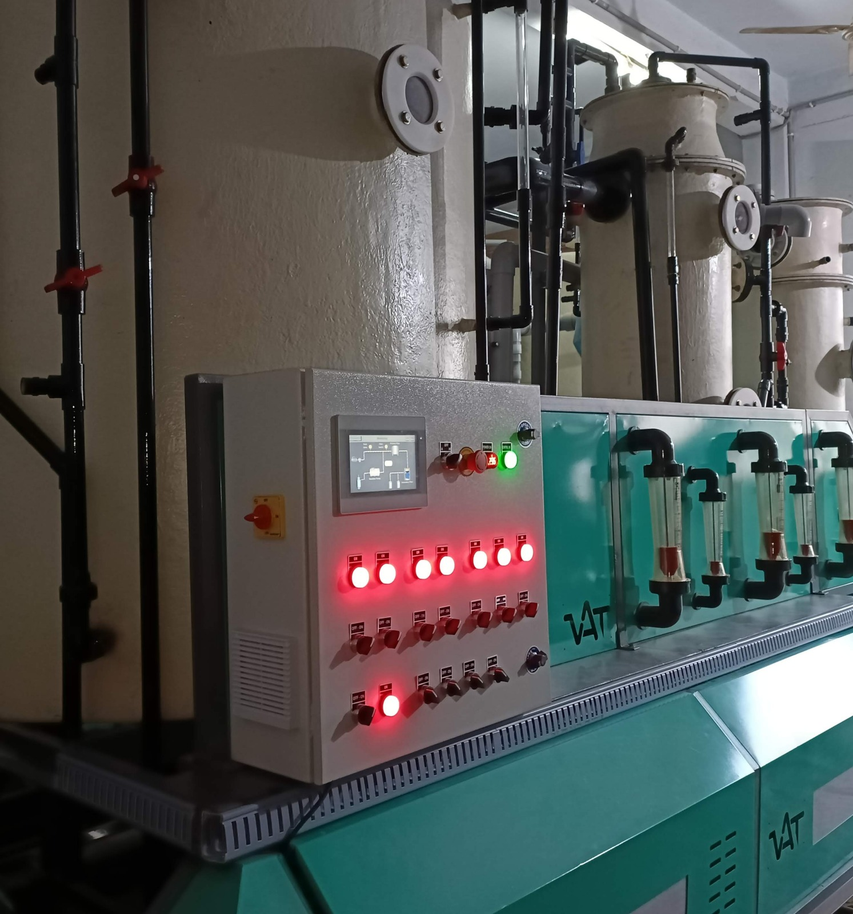
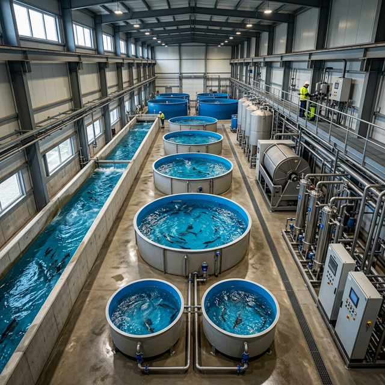

Precision-Engineered
Water Solutions
for Modern Industry
From industrial-grade Reverse Osmosis plants to advanced Recirculating Aquaculture Systems — we architect high-performance water infrastructure that drives operational excellence and sustainability.
A Legacy of Engineering
Excellence & Innovation
Venigem Advanced Technologies Pvt. Ltd. is a Hyderabad-based engineering firm specializing in the design, fabrication, and commissioning of advanced water treatment infrastructure and aquaculture systems for industrial, commercial, and agricultural applications.
With over 15 years of hands-on experience and 1,500+ successful project deployments across India, we have earned the trust of pharmaceutical giants, food processing companies, power generation plants, and aquaculture enterprises. Our vertically integrated approach — from R&D and hydraulic design to in-house fabrication and on-site commissioning — guarantees unmatched quality control and operational reliability.
Our Mission
To deliver world-class water engineering solutions that maximize efficiency, minimize environmental impact, and exceed regulatory standards for every client we serve.
Our Vision
To become India's most trusted and innovative water technology company, setting new benchmarks in precision engineering and sustainable infrastructure development.

End-to-End Water Engineering Solutions
We deliver turnkey water infrastructure — from initial hydraulic design and fabrication through commissioning and lifecycle support — engineered for maximum uptime and regulatory compliance.
Water Treatment Plants
Industrial-grade WTP systems engineered for consistent output quality, regulatory compliance, and minimal operational expenditure.
- Multi-stage purification
- Automated PLC controls
- Custom capacity design
Aquaculture (RAS)
Advanced Recirculating Aquaculture Systems enabling high-density, bio-secure fish farming with 99% water recirculation efficiency.
- Bio-secure environment
- Modular scalability
- 99% water recirculation
Industrial RO Systems
Heavy-duty Reverse Osmosis plants delivering ultra-pure output for pharmaceutical, manufacturing, and power generation sectors.
- SS304 construction
- 99.5% TDS removal
- Energy-efficient design
Sewage Treatment Plants
Efficient STP solutions ensuring environmental compliance, zero-liquid discharge readiness, and sustainable resource recovery.
- ZLD compatible
- Eco-compliant
- Low operational cost
Numbers That Demonstrate Our Commitment
Over 15 years of relentless dedication to quality engineering and client satisfaction — reflected in every metric.
Engineering Excellence
Built on Trust & Innovation
For over 15 years, Venigem Advanced Technologies has been the preferred engineering partner for industries demanding uncompromising water quality and operational reliability. Our solutions are designed, fabricated, and commissioned entirely in-house — ensuring absolute quality control at every stage.
Bespoke Engineering Design
Every system is custom-engineered to your specific feed water profile, capacity requirements, and site constraints.
Zero-Compromise Quality
Premium-grade SS304/316 materials, industrial VFD drives, and globally sourced membranes in every build.
Lifecycle Partnership
From initial consultation through commissioning and beyond — dedicated engineers supporting your operations 24/7.
Regulatory Compliance Guaranteed
All systems are designed and built to meet ISO, BIS, CPCB, and industry-specific standards with full documentation.

Excellence
Trusted Standards. Verified Quality.
Every product and process at Venigem adheres to nationally and internationally recognized quality standards — giving our clients absolute confidence in our deliverables.
ISO 9001:2015
Quality Management System certified for design, manufacturing, and service delivery excellence.
BIS Standards
All products comply with Bureau of Indian Standards specifications for water treatment equipment.
CPCB Compliant
Systems designed to meet Central Pollution Control Board emission and discharge norms.
Lab Tested
Every unit undergoes rigorous in-house testing — pressure, leak detection, and water quality validation before dispatch.
AMC Agreements
Structured Annual Maintenance Contracts ensuring peak system performance, uptime, and lifecycle optimization.
Trusted Across Critical Sectors
Our engineered solutions power operations in the most demanding environments — from pharmaceutical clean rooms to large-scale aquaculture installations.
Pharmaceuticals
USP/EP grade purified water & WFI systems for GMP-compliant manufacturing environments.
Clean Room GradeFood & Beverage
Sanitary process water treatment with FSSAI compliance for dairy, beverage & food plants.
FSSAI CompliantManufacturing
Utility & boiler feed water systems for steel, textile, automotive & chemical industries.
24/7 OperationsAquaculture
High-density RAS farming solutions with 99% water recirculation & bio-secure environments.
99% RecirculationCommercial
Compact water treatment & STP systems for hotels, malls, IT parks & real estate complexes.
Green CertifiedPower & Energy
Demineralized water plants for turbine feed, cooling towers & co-generation facilities.
Turbine GradeHealthcare
Dialysis-grade purified water systems meeting AAMI standards for hospitals & diagnostic labs.
AAMI CompliantMunicipal
Community-scale water & sewage treatment infrastructure for towns & urban developments.
Large CapacityWhat Our Clients Say
Hear from industry leaders who rely on Venigem for their most critical water infrastructure needs.
"Venigem delivered our 10,000 LPH purified water plant on schedule. The system quality for GMP compliance has been exceptional. A trusted engineering partner for pharma."
"Their RAS aquaculture system transformed our operations. 99% water recirculation and zero disease outbreaks in 18 months. Outstanding ROI for Aero Intelli."
"Custom STP solution for our 500-room hotel was commissioned in just 8 weeks. Flawless execution and silent operation within guest areas."
"The sanitary-grade RO system meets the highest FSSAI standards. Automated recovery tracking has significantly reduced our water footprint across dairy units."
"Zero-compromise ultra-pure water for our clinical labs. The dialysis-grade performance with precise conductivity monitoring is exactly what we needed."
"Venigem delivered our 10,000 LPH purified water plant on schedule. The system quality for GMP compliance has been exceptional. A trusted engineering partner for pharma."
"Their RAS aquaculture system transformed our operations. 99% water recirculation and zero disease outbreaks in 18 months. Outstanding ROI for Aero Intelli."
"Custom STP solution for our 500-room hotel was commissioned in just 8 weeks. Flawless execution and silent operation within guest areas."
"The sanitary-grade RO system meets the highest FSSAI standards. Automated recovery tracking has significantly reduced our water footprint across dairy units."
"Zero-compromise ultra-pure water for our clinical labs. The dialysis-grade performance with precise conductivity monitoring is exactly what we needed."
How We Deliver Excellence
A systematic, transparent approach — from your first inquiry to long-term operational support.
Consultation & Analysis
We analyze your feed water quality, site constraints, and output requirements to define the optimal solution architecture.
Custom Design & Engineering
Our engineers develop a fully customized P&ID, hydraulic layout, and BOM tailored precisely to your project scope.
Fabrication & Quality Testing
Systems are fabricated in-house with rigorous quality checks at every stage — pressure testing, leak detection, and performance validation.
Install, Commission & Support
On-site installation, operator training, and ongoing AMC support to ensure your systems deliver peak performance — always.